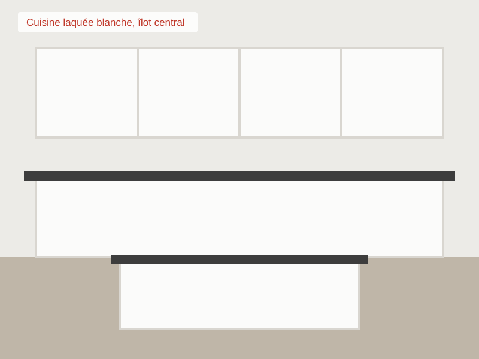
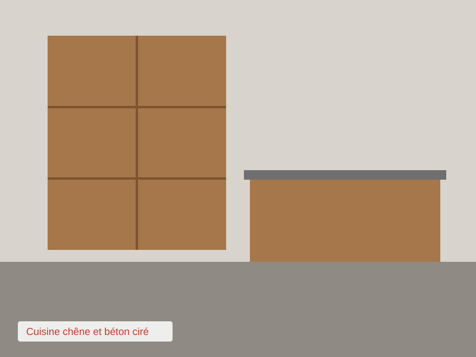

CUISINES LUMEO : votre cuisiniste à Véreuil depuis 1994
OFFRE SPÉCIALE 2009 : électroménager offert pour toute cuisine commandée avant le 31 décembre !!!
Bienvenue sur notre site. Cuisines Lumeo conçoit, fabrique et installe des cuisines équipées, des salles de bains et des
rangements sur mesure. Notre showroom de 300 m² vous présente plus de 15 modèles exposés. Étude 3D gratuite, pose par nos
propres équipes, service après-vente assuré.
Nos cuisines
 
Cuisines laquées, bois massif, stratifié, plans de travail en quartz, granit ou céramique.
Salles de bains et rangements
Meubles vasques, douches à l'italienne, dressings et placards sur mesure.
|
Contact
Tél. : 01 99 00 41 52
Showroom ouvert du mardi au samedi
9h30-12h / 14h-19h
Le formulaire est temporairement indisponible, merci de nous appeler.
|